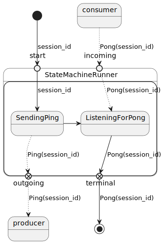

Table of Contents
1. Ping application
This application is a POC, implementing the following behaviour using Apache Kafka as broker:
Logs and traces are collected using OpenTelemetry, and can be viewed using Jaeger.
Both the client and the server component are implemented in Rust using the Oblivious state machine and kafka-rust libraries.
2. Setup development environment
The development environment is setup using docker-compose, and consists of a Kafka server, including zookeeper, kafka-ui and Jaeger.
docker-compose up
This will download and start all the necessary services. It will also create the topics that needed for this POC.
You can Contact Kafka UI at: http://localhost:8080/
You can view Jaeger at: http://localhost:16686/
3. Ping Client
The Ping client is implemented as a single-shot CLI application.
In order to run the Ping component with logging, set RUST_LOG, e.g.:
JAEGER_TRACING= RUST_LOG=trace cargo run --bin ping
Or spawn many concurrent tasks:
cargo build --release for i in {0..31}; do RUST_LOG=info target/release/ping & done
3.1. Ping state machine

4. Ping Server
The Ping server is implemented using tokio. For each incoming message, a new task is spawned, that will execute the STM.
In order to run the Pong component with logging, set RUST_LOG, e.g.:
JAEGER_TRACING= RUST_LOG=info cargo run --bin pong
4.1. Pong state machine

After sending the Pong message, a PongSent event is emitted, this will ensure that the state machine is active until all messages are processed.
Without this in place, there could be a race condition, since tokio channels are used to communicate outgoing messages, there could be a race condition where the outgoing channel is closed before the producer handled the message.
5. TODO
- Use
apache-avro = { version = "X.Y.Z", features = ["derive"] }instead of JSON, and publish schema to schemaregistry. - Create topics from client/server?